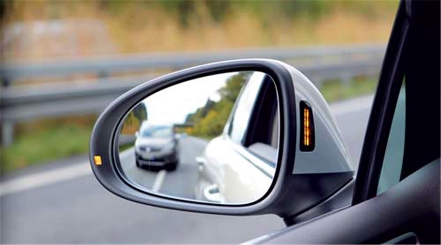
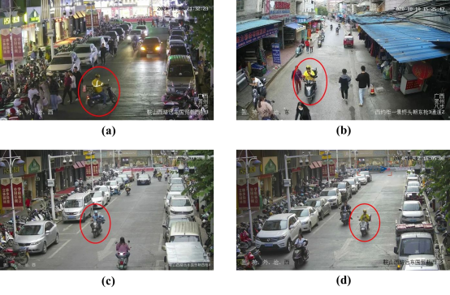
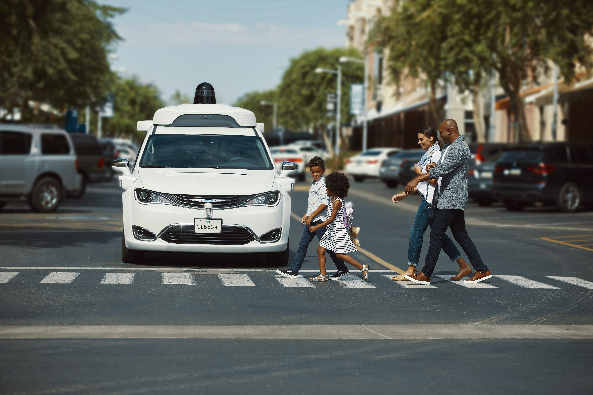
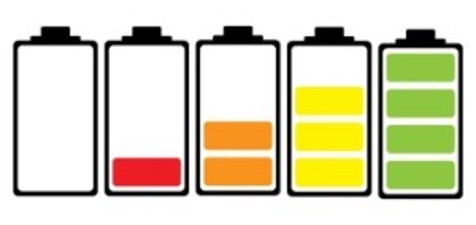
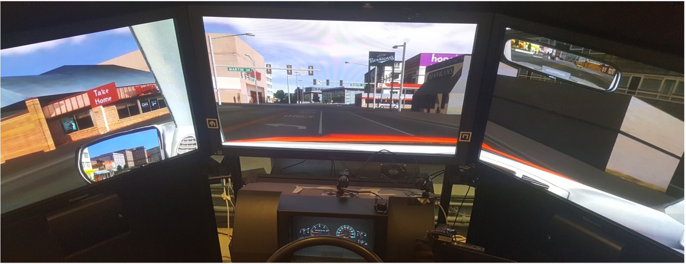

Defensive Driving Behaviors in Vehicles with GB/T Level-2 Driving Automation
The popularization of driving automation systems in recent years has raised safety concerns on adopting these systems. In the foreseeable future, drivers are still required to monitor the road and the automation, and take over the control of the vehicle when necessary in vehicles with driving automation. Thus, defensivedriving, which is critical to driving safety in non-automated vehicles, may still enhance driving safety in vehicles equipped with driving automation. Defensive driving can allow drivers to respond to or get ready to respond to critical situations in advance and increase their time buffer before takeover events.However, very few studies have investigated defensive driving in vehicles with driving automation. How defensive driving can be influenced by drivers’ mental model, hazard perception and other potential factors is still unclear, and veryfew strategies have been proposed to facilitate drivers’ defensive driving behaviors in vehicles with driving automation. In this project, we aim to introduce the concept of defensive driving into vehicles with GB/T Level-2 driving automation, and investigate the factors that may influence drivers’ defensive driving behaviors through survey studies, driving simulation, video simulation,instrumented vehicle experiments and naturalistic data collection. Then, we planto propose and evaluate strategies (e.g., in-vehicle display design and drivertraining program) that can facilitate defensive driving in vehicles with GB/TLevel-2 automation, and analyze the mechanisms of these facilitating strategies.The outcome of this project can provide theoretical guidelines and practical experience for the design of behavior intervention strategies for users of driving automation.
Distracted e-Bike Riding among Delivery Workers in China: Understandings and Interventions
With the fast development of Online-to-Offline market, there are over 13 million of delivery workers in China. The major transportation tool of them is electric bicycles, or e-bikes. Due to the time pressure of the delivery task, delivery workers usually involve in non-riding-related tasks (NRRTs) while riding e-bikes, leading to distracted riding, which can threat traffic safety. Although distraction engagement in vehicle driving and motorcycle/bicycle riding have been extensively investigated, the prevalence of and the factors leading to distracted riding among delivery workers have not yet been explored. In this study, a survey has been designed based on the theory of planned behavior (TPB) to explore underlying social-psychological factors leading to NRRTs engagement among delivery workers.
Understanding the interactions between autonomous vehicles and other road users in mixed traffic
This research aims to understand the interactions between autonomous vehicles (AVs) being tested in Nansha District, Guangzhou and other road users including pedestrians and human drivers. We will analyze the safety implications of mixed traffic consisting of AVs and human road users, explore the contributing factors that affect road users' behaviors when interacting with AVs in the real world, and design external human machine interfaces (eHMIs) that can facilitate safe and efficient interactions between AVs and human road users. Above figure comes from Waymo.
User‘s Trust in Electric Vehicle’s Battery System and Charging Behavior/Strategy Analysis
The electrification of automotive power systems is the mainstream solution for current NEVs (new energy vehicles). According to the NEV roadmap proposed by China in 2020, it is estimated that by 2035, China's NEVs will account for more than 50% of total vehicle sales, of which battery electric vehicles (BEV) will account for more than 95% of NEVs. Compared with fuel vehicles, electric vehicles have the advantages like fast acceleration and zero emissions. However, many studies have shown that range anxiety is one of the main obstacles hindering the popularization of electric vehicles under current technical conditions. Range-Anxiety can be defined as a stressful experience of a present or anticipated range situation, when the range resources and personal resources available to effectively manage the situation (e.g., increase available range) are perceived to be insufficient. The range-anxiety is manifested as the driver's uncertainty about whether they can reach the destination with the vehicle’s remaining battery capacity, resulting in cognitive, emotional, behavioral and physiological changes. Due to the limitations of existing battery technology and the construction of replenishment points, we need to analyze the possible factors influencing users' trust in electric vehicles' battery systems from the perspective of human factors engineering in order to support the design of the BEV and the optimization of the distribution of the charging stations.
High Cognitive Load Management of Automated Driving System Users based on Driver State Estimation
This project aims to analyse the relationship between driver high cognitive load state and driving safety in assisted driving scenarios, explore the safety threshold of driver high cognitive load, and develop a senseless monitoring algorithm for driver high cognitive load state based on machine learning, computer vision and multi-source data fusion, design and validate an in-vehicle interaction and driver assistance guidance solution based on driver high cognitive load mitigation, and provide new ideas for the design of intelligent cockpits and the development of adaptive coping strategies for driver assistance systems under high cognitive load.